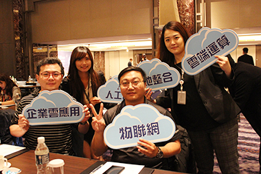
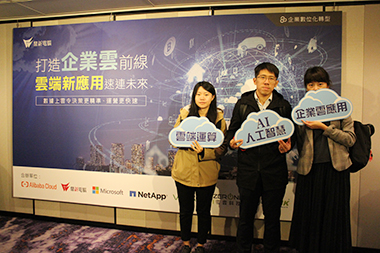

雲端新應用打造堅實資訊環境，提高創新動能實現數據轉型
文：潘孟絹
根據IDC 預測，到 2023 年超過 50% 的 ICT 支出將用於數位化轉型和創新；iThome 2019年針對IT人員的調查報告亦顯示6成以上企業正在積極推動數位轉型，顯示出IT人員不再僅止於設備維護，更將成為未來企業創新轉型的重要推手。
鼎新電腦察覺到了此波改變，11/27(三) 與Alibaba Cloud、微軟、NetApp、Veeam、零壹科技、ULINK及jWin各世界大廠攜手在台北喜來登大飯店舉辦《打造企業雲前線，雲端新應用速連未來》研討會，共同打造雲端聯盟生態系，希望成為企業夥伴在數位化轉型時的最佳助力。
▲研討會邀請(左起)Alibaba Cloud劉子銘諮詢總監、微軟馮立偉副總、
鼎新電腦沈佑軒資深經理、NetApp李新夏資深顧問及Veaam的陳瑞文顧問分享最新雲趨勢
這次的研討會非常精采，邀請到鼎新電腦、Alibaba Cloud、微軟、NetApp及Veeam分享最新雲應用趨勢，第一段議程中，鼎新電腦沈佑軒資深經理分享根據Gartner的預估，全球的雲端服務都呈上漲態勢，建議企業可以提前佈局，打造可信賴且穩定的雲端環境助力企業轉型；他舉了嬌生的例子，嬌生透過混合雲策略，將ERP由140個整併為50個，不僅讓90%以上IT工作負荷轉為雲端運算處理，更藉此發展電子商務、醫療夥伴數據分析研究、設備聯網等新創服務，降本提效成功轉型；雖然企業短期內可能無法擘劃出如嬌生般的數位轉型藍圖，但可由遵守「3-2-1-0」的法則開始，打造堅實資訊城牆，確保營運不中斷，打好未來轉型良好基底。Alibaba Cloud劉子銘諮詢總監提到企業常見三大技術問題，分別為：IT很慢、數據不好用及手動操作OT不斷，他建議企業可以建立符合企業需求的靈活性架構，並透過人工智能輔助使用數據，透過雲計算打造AI新價值，不僅可解決上述問題，更可從中創造雲的商機。
|
|
| ▲鼎新電腦沈資深經理建議企業遵守”3-2-1-0”法則，方能確保營運不中斷 |
微軟的馮立偉副總提到，當企業達到一定的規模，營運模式逐漸複雜，企業的Log量也不斷增加，隨之而來的就是維護及設備成本的大幅提升，因此他建議資訊人員應善用資源，規劃走向雲跟雲的結合，資源互用減少server增加邊緣運算，方能協助企業進行創新轉型。馮副總鼓勵與會者，唯有做出創新服務才能讓企業在市場做出區隔；微軟也提供相關服務，透過靈活運用、相容性高的平台，協助企業提升資訊管理效率。
NetApp的李新夏資深顧問也建議，企業在建立新的架構時應該要規劃靈活的解決方案，從使用者的角度出發，讓使用者可以在任何一個雲中佈署他需要的資料，以開放的方式直接管理多雲，從雲端到地端，從地端到雲端，規畫出完整的功能與解決方案。他也提醒企業應兼顧四大必要功能，方能建立以服務導向的私有雲基礎。
|
 |
| ▲李新夏顧問建議建立以服務導向的私有雲基礎時，應考慮四大必要功能 |
現在資源的運用越來越靈活，地端、私有雲跟公有雲的界線越來越模糊，Veaam的陳瑞文顧問提到，企業不可能僅使用單一個項目，現在已有81% 的企業組織採用多雲策略，導入混合雲的企業也從19%成長到57%，企業進行規劃時，首重可用性，規劃時可先思考企業的RTO(Recovery Time Objective，復原時間目標)及RPO(Recovery Point Objective，復原點目標)需求，善用雲的整合確保環境、系統、服務的可用性，他也建議可以同時透過虛擬機及實體機，進行備份、備援作業，確保企業營運不中斷。
透過講師的精采分享，可以了解到企業在規劃時首重安全、靈活性及可用性，隨著AI、雲端計算及物聯網等技術日趨成熟，是否善用數據將成為未來創新及致勝關鍵。順應此波潮流，鼎新電腦也已規劃工業APP跟設備點檢，可以即時監控及分析公司的生產稼動率，維護保養、設備檢修等，未來也企業也可將數據倒入系統，透過AI分析進行提前預警及時報修，鼎新電腦將與聯盟夥伴持續成為企業轉型成長時的最佳後盾。
▲企業夥伴與會聆聽最新雲趨勢 |
▲企業夥伴對雲議題十分關心，現場座無虛席 |

▲鼎新與您一同關心產業最新趨勢 |

▲與會者於活動看板前合照 |
|